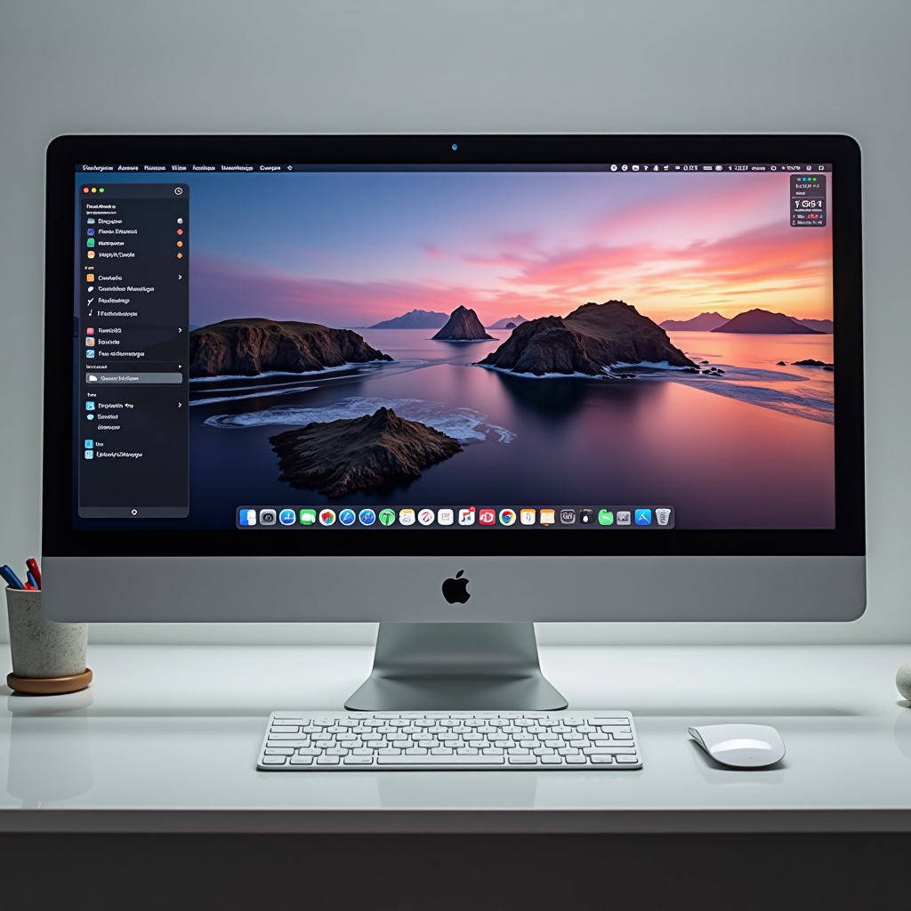

Personalizing Your macOS Workspace for Maximum Efficiency

Optimizing Your Dock Configuration
The Dock is your primary gateway to applications and files, yet many users leave it in its default state, cluttered with apps they rarely use. A well-configured Dock can dramatically speed up your Mac experience by providing instant access to your most-used tools while eliminating visual clutter that slows down your workflow.
Start by removing all applications you don't use daily. Right-click any app icon and select "Options" then "Remove from Dock." This simple action can transform your Dock from a crowded toolbar into a streamlined command center. Keep only your essential applications—typically between 5 to 10 apps that you access multiple times per day. For everything else, use Spotlight (Command + Space) or Launchpad for quick access.
Consider organizing your Dock by workflow rather than alphabetically. Group related applications together using invisible spacers, which you can add by entering this Terminal command:defaults write com.apple.dock persistent-apps -array-add '{"tile-type"="spacer-tile";}'; killall Dock. This creates visual separation between different categories of apps, making it easier to locate what you need at a glance.
Adjust your Dock size and position to match your screen real estate and working style. System Preferences > Dock & Menu Bar allows you to customize the Dock's size, magnification, position (bottom, left, or right), and behavior. Many power users prefer a smaller Dock positioned on the left or right side of the screen, maximizing vertical space for document viewing. Enable "Automatically hide and show the Dock" if you want to reclaim even more screen space—your Dock will appear instantly when you move your cursor to its edge.
Menu Bar Organization and Control Center
The menu bar has evolved significantly in recent macOS versions, and proper organization here can eliminate distractions while keeping essential controls within reach. With the introduction of Control Center, you now have powerful options for managing which icons appear in your menu bar and which are tucked away in the Control Center panel.
Navigate to System Preferences > Dock & Menu Bar to customize what appears in your menu bar. For each module—Wi-Fi, Bluetooth, Sound, Battery, and others—you can choose whether to show the icon in the menu bar, show it only in Control Center, or hide it entirely. This granular control lets you maintain a clean, uncluttered menu bar while still having quick access to settings you need.
Consider which controls you actually use frequently. Most users benefit from keeping Wi-Fi, Sound, and Battery visible, while moving less-used items like Bluetooth, AirDrop, and Screen Mirroring to Control Center only. Third-party menu bar apps should also be evaluated critically—each icon takes up valuable space and can contribute to visual noise that impacts your focus and potentially slows down your perception of system responsiveness.
For menu bar apps you want to keep but don't need to see constantly, tools like Bartender or Hidden Bar can help you organize and hide icons behind a collapsible menu. This gives you the best of both worlds: access to all your tools without the visual clutter. A clean menu bar not only looks better but also reduces cognitive load, allowing you to focus on your actual work rather than scanning through dozens of icons.
Desktop Arrangement Strategies
Your desktop is more than just a background—it's a workspace that can either enhance or hinder your productivity. The way you organize files, folders, and windows on your desktop has a direct impact on how quickly you can find what you need and how efficiently you can work across multiple applications.
Many productivity experts advocate for a completely clean desktop with zero visible files. This approach, while extreme, has merit: a clear desktop reduces visual distractions and forces you to develop better file organization habits. If you're not ready to go completely minimal, at least establish a system. Create a single "Desktop" folder in your Documents directory and use it as a temporary staging area, reviewing and organizing its contents weekly.
Leverage macOS Spaces (virtual desktops) to organize your work by context rather than cramming everything into one screen. Access Mission Control (swipe up with three or four fingers, or press F3) and create dedicated Spaces for different types of work: one for communication apps, another for creative work, a third for research and browsing. This separation helps you maintain focus and makes switching between different work modes seamless. You can even assign specific applications to always open in particular Spaces through the app's Dock icon options.
Window management is crucial for desktop efficiency. While macOS includes basic window snapping when you hold the green maximize button, consider using third-party tools like Rectangle, Magnet, or BetterSnapTool for more sophisticated window management. These tools let you quickly arrange windows in halves, quarters, or custom layouts using keyboard shortcuts, dramatically speeding up your workflow when working with multiple applications simultaneously.
Finder Preferences and Customization
Finder is the application you'll use more than any other on your Mac, yet its default settings are designed for beginners rather than efficiency. Customizing Finder preferences can transform it from a basic file browser into a powerful productivity tool that helps you navigate your file system with speed and precision.
Open Finder Preferences (Command + ,) and start with the General tab. Set "New Finder windows show" to your most frequently accessed location—for most users, this should be your home folder or a specific project directory rather than "Recents." In the Sidebar tab, customize which items appear in your Finder sidebar. Include locations you access frequently and remove those you don't. Your sidebar should be a quick-access menu to your most important folders, not a comprehensive list of every possible location.
In the Advanced tab, enable "Show all filename extensions" to always see complete file names, which helps prevent confusion and potential security issues. Also enable "Show warning before changing an extension" to prevent accidental file type changes. Consider enabling "Keep folders on top" in both "In windows when sorting by name" and "On Desktop" options—this keeps your folder structure visible and organized, making navigation more intuitive.
Customize your Finder toolbar by right-clicking it and selecting "Customize Toolbar." Add buttons for actions you perform frequently, such as New Folder, Delete, Get Info, or Share. Remove buttons you never use. You can also add the Path button, which shows your current location in the file hierarchy and allows quick navigation to parent folders. These small customizations add up to significant time savings when you're navigating files dozens or hundreds of times per day.
Master Finder's view options for different scenarios. List view is excellent for quickly scanning large directories and sorting by various attributes. Column view provides hierarchical navigation that's perfect for drilling down through nested folders. Gallery view works well for visual content like photos and designs. Learn the keyboard shortcuts to switch between views instantly: Command + 1 (Icon), Command + 2 (List), Command + 3 (Column), and Command + 4 (Gallery).
Accessibility Features for Enhanced Comfort
macOS accessibility features aren't just for users with disabilities—they're powerful tools that can make computing more comfortable and efficient for everyone. Many of these features can reduce eye strain, improve readability, and make long computing sessions more comfortable, ultimately helping you maintain productivity throughout the day.
Zoom functionality (System Preferences > Accessibility > Zoom) lets you magnify any portion of your screen using keyboard shortcuts or trackpad gestures. This is invaluable when working with detailed graphics, small text, or complex interfaces. Enable "Use scroll gesture with modifier keys to zoom" and you can zoom in and out by holding Control and scrolling with two fingers on your trackpad. This feature can significantly reduce eye strain when working with fine details.
Display accommodations offer several options for improving visual comfort. Increase Contrast can make interface elements more distinct, particularly useful in bright environments or for extended reading sessions. Reduce Motion disables many of macOS's animations, which not only speeds up the interface but can also reduce motion sickness and eye fatigue for some users. Reduce Transparency makes menu bars and windows more opaque, improving readability and potentially improving performance on older Macs.
Night Shift (System Preferences > Displays > Night Shift) automatically adjusts your display's color temperature based on the time of day, reducing blue light exposure in the evening. This can help reduce eye strain during late-night work sessions and may improve sleep quality. Schedule it to activate automatically at sunset, or customize the timing to match your work schedule. You can also adjust the color temperature slider to find the warmth level that's most comfortable for your eyes.
Cursor and pointer customizations can make a surprising difference in daily comfort. In Accessibility > Pointer Control, you can increase the cursor size for better visibility, adjust tracking speed for more precise control, and enable "Shake mouse pointer to locate" which temporarily enlarges your cursor when you shake your mouse or move your finger rapidly on the trackpad. These small adjustments can reduce the cognitive load of locating your cursor, especially on large or multiple displays.
Creating Your Ideal Working Environment
Personalizing your macOS workspace is an ongoing process, not a one-time setup. As your work evolves, your needs change, and new features become available, your ideal configuration will shift. The key is to regularly evaluate your setup and make incremental improvements that compound over time into a significantly more efficient and comfortable working environment.
Start by implementing one or two changes from this guide that resonate most with your current pain points. If you're constantly hunting for applications, focus on Dock optimization. If you struggle with window management, invest time in learning Spaces and window snapping tools. If eye strain is an issue, explore the accessibility features. Small, focused improvements are more sustainable than trying to overhaul everything at once.
Remember that the goal isn't to create the most minimal or aesthetically perfect setup—it's to create an environment that supports your specific workflow and reduces friction in your daily tasks. What works for a designer might not work for a developer, and what works for someone who primarily uses their Mac for communication might not work for someone doing video editing. Your personalized workspace should reflect your unique needs and working style.
By taking control of your macOS workspace configuration, you're not just making cosmetic changes—you're investing in your productivity, comfort, and long-term relationship with your Mac. A well-configured system that feels tailored to your needs can help speed up your Mac experience, reduce frustration, and make every computing session more enjoyable and efficient. Take the time to personalize your workspace, and you'll reap the benefits in every task you perform.
Pro Tip:Document your customizations and preferences in a note or text file. This makes it easy to replicate your ideal setup if you get a new Mac or need to reinstall macOS. Include your Finder preferences, Dock configuration, keyboard shortcuts you've customized, and any third-party tools you rely on.